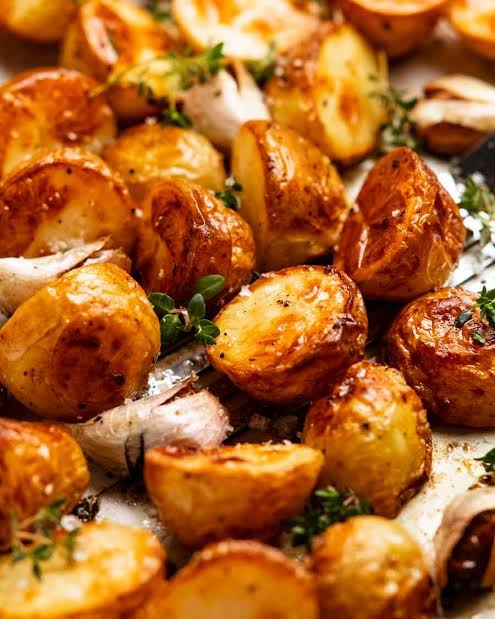

find a list of all recipes here!
Roast-Potatoes

Description
These are the most flavorful crispy roast potatoes you’ll make. And they just happen to be gluten-free and vegan (if you use oil) to boot.
Ingredients
-
Kosher salt
-
1/2 teaspoon (4 g) baking soda
-
4 pounds (1.8 kg) russet or Yukon Gold potatoes, peeled and cut into quarters, sixths, or eighths, depending on size (see note)
-
etc
Steps
-
Adjust oven rack to center position and preheat oven to 450°F (230°C) or 400°F (200°C) if using convection.
-
Meanwhile, combine olive oil, duck fat, or beef fat with rosemary, garlic, and a few grinds of black pepper in a small saucepan and heat over medium heat.
-
When potatoes are cooked, drain carefully and let them rest in the pot for about 30 seconds to allow excess moisture to evaporate.